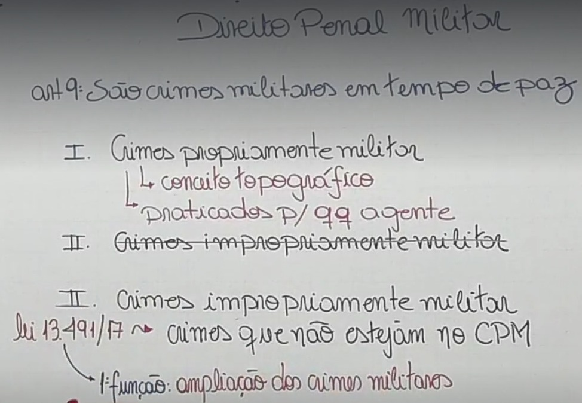
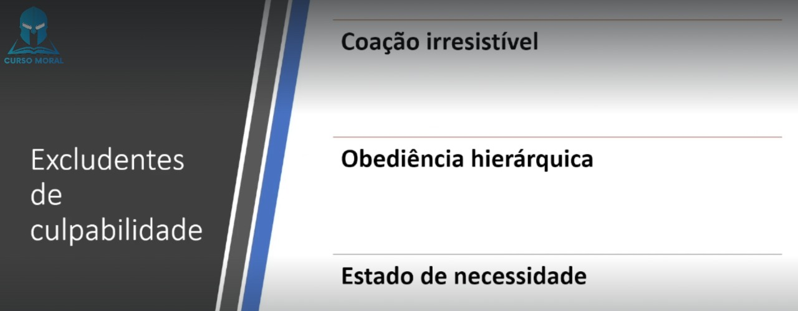

🎥 01. Introdução ao Direito Penal Militar
Sua Função é tutelar bens jurídicos importantes(Relevantes) para o funcionamento regular das instituições militares como:
📌 Hierarquia
📌 Disciplina
📌 Autoridade
📌 Serviço Militar
📌 Função Militar
📌 Dever Militar.
Se tornou Lei Ordinária

🎥 02. Aplicação da Lei Penal Miltar- Parte 1
📌 Em serviço
📌 De Folga
📌 Em Curso de Formação
📌 Revertido da Inatividade.
📌 Reserva Remunerada
📌 Reformado
📌 Por idade
📌 Incapacidade
📌 Sação Disciplinar Administrativa
📌 Penalmente. (Art. 65)
Equibarado a Atividade, para efeito da aplicação da lei penal militar (Art. 12)
Sim, para efeito da aplicação da lei penal militar, quando pratica ou contra ele é praticado crime militar (Art. 13)
Sim, quando em comissão ou estágio nas forças armadas, ressalvando o disposto em tratados ou conveções internacionais (Art. 11)
Sim, no Art. 9º III - os crimes praticados por militar da reserva, ou reformado, ou por civil, contra as instituições militares, considerando-se como tais não só os compreendidos no inciso I, como os do inciso II, nos seguintes casos:
📌 a) contra o patrimônio sob a administração militar, ou contra a ordem administrativa militar;
📌 b) em lugar sujeito à administração militar contra militar em situação de atividade ou assemelhado, ou contra funcionário de Ministério militar ou da Justiça Militar, no exercício de função inerente ao seu cargo;
📌 c) contra militar em formatura, ou durante o período de prontidão, vigilância, observação, exploração, exercício, acampamento, acantonamento ou manobras;
📌 d) ainda que fora do lugar sujeito à administração militar, contra militar em função de natureza militar, ou no desempenho de serviço de vigilância, garantia e preservação da ordem pública, administrativa ou judiciária, quando legalmente requisitado para aquêle fim, ou em obediência a determinação legal superior.
Considera-se assemelhado o servidor, efetivo ou não, dos Ministérios da
Marinha, do Exército ou da Aeronáutica, submetido a preceito de disciplina militar, em virtude de lei ou regulamento.(Art. 21)

🎥 03. Aplicação da Lei Penal Miltar- Parte 2
O tempo de guerra, para os efeitos da aplicação da lei penal militar, começa com
a declaração ou o reconhecimento do estado de guerra, ou com o decreto de mobilização se nêle estiver compreendido aquêle reconhecimento; e termina quando ordenada a cessação das hostilidades.(Art. 15)

Aos crimes praticados em tempo de guerra, salvo disposição especial, aplicam-se as penas cominadas para o tempo de paz, com o aumento de um terço.(Art. 20)
A Lei de Introdução ao Código Penal (lei nº 3.914/41) define crime dessa maneira: Art 1º - Considera-se crime a infração penal que a lei comina pena de reclusão ou de detenção, quer isoladamente, quer alternativa ou cumulativamente com a pena de multa; contravenção, a infração penal a que a lei comina, isoladamente, pena de prisão simples ou de multa, ou ambas, alternativa ou cumulativamente.
📌 Crime comissivo: é aquele que é praticado por um comportamento positivo do agente, isto é, um fazer. São comissivos os crimes de furto e de infanticídio por exemplo.
📌 Crime omissivo: é aquele que é praticado por meio de um comportamento negativo, uma abstenção, um não fazer, omissão.
As condutas que não são determinadas como crimes são fatos atípicos porque não existe a determinação de aplicação de pena para a prática desses atos.
O fato típico (a conduta típica) é a ação ou omissão promovida pelo seu autor e prevista em lei como crime.
Não há crime sem lei anterior que o defina, nem pena sem prévia cominação legal. (Art. 1º CPM)
📌 Princípio da Reserva legal; Para o Crime e a Pena
📌 Princípio da Anterioridade da lei; Para o Crime e a Pena
📌 Princípio da Taxatividade; Para o Crime
O agente somente poderá ser processado, se sua conduta for previamente tipificada (com clareza e precisão) como crime.
Decorrente da reserva legal, o princípio da anterioridade veda a responsabilização criminal dos indivíduos por fatos praticados antes da entrada em vigor da lei penal que os define como crime e preveja a respectiva sanção.
A lei Penal deve ser clara e precisa, de forma que o destinatário da lei possa compreende-la. sendo vedada, portanto, com base em tal princípio, a criação de tipos que contenham conceitos vagos ou imprecisos. A lei deve ser, por isso, taxativa.
🎥 04. Aplicação da Lei Penal Miltar- Parte 3
Ninguém pode ser punido por fato que lei posterior deixa de considerar crime, cessando, em virtude dela, a própria vigência de setença condenatória irrecorrível, salvo quando aos efeitos de natureza civil. (Art. 2 CPM) (Abolitio Criminis)
📌 A lei posterior que, de qualquer outro modo, favorece o agente, aplica-se
retroativamente, ainda quando já tenha sobrevindo sentença condenatória irrecorrível. (Art. 2º, § 1ºCPM)
📌 Para se reconhecer qual a mais favorável, a lei posterior e a anterior devem ser consideradas separadamente, cada qual no conjunto de suas normas aplicáveis ao fato.(Art. 2º, § 2º CPM)
É a nova lei que, de qualquer modo, prejudica o réu, sendo irretroativa, devendo ser aplicada a lei vigente quando do tempo do crime. Trata-se de observância da lei ao princípio da anterioridade, corolário do princípio da legalidade.
É a nova lei que de qualquer modo beneficia o réu. Esta lei retroagirá, atendendo à regra, prevista no artigo 2°, do CPM. A lei penal nova que beneficia o réu não respeita a coisa julgada, sendo aplicada mesmo quando o agente já tenha sido condenado definitivamente.
Quando nova lei penal descriminaliza fato que a lei anterior considerava como crime. Neste sentido, a lei passada é revogada e o fato típico, então, passa a constituir fato atípico. Como, por exemplo, os antigos crimes de adultério, rapto consensual e sedução.

A lei excepcional ou temporária, embora decorrido o período de sua duração ou
cessadas as circunstâncias que a determinaram, aplica-se ao fato praticado durante sua
vigência. (Art. 4º CPM)
Trata-se da teoria adotada no Brasil e tem relação com o tempo do crime, ou seja, por essa teoria considera-se praticado o crime no momento da ação ou omissão ainda que outro seja o momento do resultado (art. 5º, CPM).
Contrariando a primeira, a teoria do resultado considera o lugar onde se deu o resultado do crime.
De forma ampla, a teoria da ubiquidade ou mista considera as duas teorias anteriores, sendo que por meio desta pode se considerar o local onde se produziu a ação ou omissão, quanto aquele onde ocorreu o resultado.
consiste na ação de aplicar uma lei (ou dispositivo de lei) que já foi revogada em casos que ocorreram durante o período em que esta estava vigente. A lei só é ultrativa se for mais benéfica ao acusado do que a legislação atual.

🎥 05. Aplicação da Lei Penal Miltar- Parte 4
As medidas de segurança regem-se pela lei vigente ao tempo da sentença, prevalecendo, entretanto, se diversa, a lei vigente ao tempo da execução. (Art. 3º)
São medidas preventivas.
As medidas de segurança são pessoais ou patrimoniais. As da primeira espécie subdividem-se em detentivas e não detentivas.
📌 As detentivas são a internação em manicômio judiciário e a internação em estabelecimento psiquiátrico anexo ao manicômio judiciário ou ao estabelecimento penal, ou em seção especial de um ou de outro.
📌 As não detentivas são a cassação de licença para direção de veículos motorizados;
📌 O exílio local e a proibição de freqüentar determinados lugares.
As patrimoniais são a interdição de estabelecimento ou sede de sociedade ou associação, e o confisco.(Art. 110º)
As medidas de segurança sòmente podem ser impostas:
📌 I - aos civis;
📌 II - aos militares ou assemelhados, condenados a pena privativa de liberdade por tempo superior a dois anos, ou aos que de outro modo hajam perdido função, pôsto e patente, ou hajam sido excluídos das fôrças armadas;
📌 III - aos militares ou assemelhados, no caso do art. 48;
📌 IV - aos militares ou assemelhados, no caso do art. 115, com aplicação dos seus §§ 1º, 2º e 3º. (Art. 111º)

Considera-se praticado o crime no momento da ação ou omissão, ainda que
outro seja o do resultado. (Art. 5º)
Considera-se praticado o fato, no lugar em que se desenvolveu a atividade criminosa, no todo ou em parte, e ainda que sob forma de participação, bem como onde se produziu ou deveria produzir-se o resultado. Nos crimes omissivos, o fato considera-se praticado no lugar em que deveria realizar-se a ação omitida (Art. 6º)
📌 Ação: Lugar 👉 Teoria da Ubiquidade;
📌 Omissão: Lugar 👉 Teoria da Atividade;
🎥 06. Aplicação da Lei Penal Miltar- Parte 5
Aplica-se a lei penal militar, sem prejuízo de convenções, tratados e regras de direito internacional, ao crime cometido, no todo ou em parte no território nacional, ou fora dêle, ainda que, neste caso, o agente esteja sendo processado ou tenha sido julgado pela justiça estrangeira. (Art. 7º)
📌 Para os efeitos da lei penal militar consideram-se como extensão do território nacional as aeronaves e os navios brasileiros, onde quer que se encontrem, sob:
📌 comando militar;
📌 militarmente utilizados ou
📌 ocupados por ordem legal de autoridade competente;
ainda que de propriedade privada. (Art. 7º, 1§ CPM)
👉 Ampliação a aeronaves ou navios estrangeiros
📌 É também aplicável a lei penal militar ao crime praticado a bordo de aeronaves ou
navios estrangeiros, desde que em lugar sujeito à administração militar, e o crime atente contra as instituições militares. (Art. 7º, 2§ CPM)
👉 Conceito de navio
📌 Para efeito da aplicação deste Código, considera-se navio tôda embarcação sob
comando militar. (Art. 7º, 3§ CPM)
A pena cumprida no estrangeiro atenua a pena imposta no Brasil pelo mesmo crime, quando diversas, ou nela é computada, quando idênticas. (Art. 8º)
No CPM não prêve a pena de multa. Não existe pena pecuniária no CPM.
📌 I - os crimes de que trata êste Código, quando definidos de modo diverso na lei penal comum, ou nela não previstos, qualquer que seja o agente, salvo disposição especial; (Conceito topográfico)(art. 9º)
📌 II - os crimes previstos neste Código e os previstos na legislação penal, quando praticados: (Redação dada pela Lei nº 13.491, de 2017) (art. 9º)

Deixar de apresentar-se o convocado à incorporação, dentro do prazo que lhe foi marcado, ou, apresentando-se, ausentar-se antes do ato oficial de incorporação:
🔒 Pena - impedimento, de três meses a um ano.
📌 Caso assimilado
§ 1º Na mesma pena incorre quem, dispensado temporariamente da incorporação, deixa de se apresentar, decorrido o prazo de licenciamento.
📌 Diminuição da pena
§ 2º A pena é diminuída de um têrço:
a) pela ignorância ou a errada compreensão dos atos da convocação militar, quando escusáveis;
b) pela apresentação voluntária dentro do prazo de um ano, contado do último dia marcado para a apresentação.
💡 OBS: Crime cometido por civil.
🎥 07. Aplicação da Lei Penal Miltar- Parte 6
💡 MA: 🔦 Militar da Ativa
💡 A: 🔦 Assemelhado
💡 MS: 🔦 Militar em Serviço
💡 MI: 🔦 Militar Inativo (Reserva ou Reformado)
💡 C: 🔦 Civil
📌 MA ou A 🤜 MA ou A
📌 MA ou A 🤜 MI ou C ou A (Em local sujeito a administração Militar).
📌 MA 🤜 Patrimônio Militar.
📌 MS 🤜 MI ou C.
📌 MI 🤜 MA ou A (Em local sujeito a administração Militar).
📌 MI OU C 🤜 MS.
📌 MI OU C 🤜 Patrimônio Militar.
Na Primeira Instância, o julgamento é realizado pelos Conselhos de Justiça, formados por quatro oficiais e pelo juiz federal da Justiça Militar da União.
Na primeira instância, o Conselho Permanente de Justiça é competente para processar e julgar militares que não sejam oficiais. O Conselho Especial de Justiça é competente para processar e julgar oficiais, exceto os oficiais generais, que são processados diretamente no Superior Tribunal Militar. Os civis são julgados monocraticamente pelo juiz federal da Justiça Militar da União.
Na primeira instância um Juíz de direito singularmente.
Na segunda instância o TJM
Na primeira instância um Conselho de Justiça Militar.
Na segunda instância o TJM
Tribunal de Juri.
💡 OBS: Os crimes de que trata este artigo, quando dolosos contra a vida e cometidos por
militares das Forças Armadas contra civil, serão da competência da Justiça Militar da
União, se praticados no contexto:
📌 I - do cumprimento de atribuições que lhes forem estabelecidas pelo Presidente da
República ou pelo Ministro de Estado da Defesa;
📌 II - de ação que envolva a segurança de instituição militar ou de missão militar, mesmo que não beligerante; ou
📌 III - de atividade de natureza militar, de operação de paz, de garantia da lei e da ordem ou de atribuição subsidiária, realizadas em conformidade com o disposto no art. 142 da CF e na forma dos seguintes diplomas legais:
📍 a) Lei nº 7.565, de 19 de dezembro de 1986 - Código Brasileiro de Aeronáutica;
📍 b) Lei Complementar nº 97, de 9 de junho de 1999;
📍 c) Decreto-Lei nº 1.002, de 21 de outubro de 1969 - Código de Processo Penal Militar; e
📍 d) Lei nº 4.737, de 15 de julho de 1965 - Código Eleitoral.
São duas funções.
💡 Primeira: Ampliar os crimes militares.
💡 Segunda: Ampliar a competência das Justiça Militar Federal.
I - os especialmente previstos neste Código para o tempo de guerra; (Art. 355 ao 408)
II - os crimes militares previstos para o tempo de paz; (Art. 136 ao 344, com aumento de 1/3)
III - os crimes previstos neste Código, embora também o sejam com igual definição na lei penal comum ou especial, quando praticados, qualquer que seja o agente:

🎥 08. Do Crime- Parte 1
O resultado de que depende a existência do crime somente é imputável a quem lhe deu causa. Considera-se causa a ação ou omissão sem a qual o resultado não teria ocorrido. (Art. 29 CPM)
Acontecimento jurídico que, em princípio, vem modificar ou alterar uma situação firmada em fato anterior, para que se possa tomar uma nova orientação ou para que se permita a adoção de medida que desfaça ato, ou medida anterior, ou que venha imprimir novo rumo à solução de uma contenda judicial.
A superveniência de causa relativamente independente exclui a imputação quando, por si só, produziu o resultado. Os fatos anteriores, imputam-se, entretanto, a quem os praticou.(Art. 29º, §1º)
A omissão é relevante como causa quando o omitente devia e podia agir para evitaro resultado. O dever de agir incumbe a:
📍 quem tenha por lei obrigação de cuidado, proteção ou vigilância;
📍 a quem, de outra forma, assumiu a responsabilidade de impedir o resultado;
📍 e a quem, com seu comportamento anterior, criou o risco de sua superveniência.
(Art. 29º, §2º)
A omissão será penalmente relevante quando houver uma lei que determine a prática de determinada ação em certo contexto e atribua a essa inatividade uma pena. Nesses casos, a omissão, que não consiste em apenas ficar parado, mas também em realizar qualquer outra conduta distinta daquela imposta pela norma, será típica sob um prisma objetivo, desde que possível a prática da conduta exigida pela lei.
Pode ser classificadas:
📍 como próprias: Quando se deixa de prestar assistência quando possível fazê-lo.
📍 e as imprórpias: é aquela por meio da qual se imputa um tipo penal comissivo (de ação) àquele que se omite, como se ele tivesse causado positivamente o resultado ou o risco previsto na norma.(Exemplo a mãe que por não cuidar de seu filho lhe causa a morte por desnutrição) (Art. 29º, §2º)

É uma expressão em latim que pode ser traduzida para “itinerário do crime” ou “caminho do crime”.
Só é verificado nos crimes dolosos, os quais possuem planejamento e vontade por parte do agente.
Enquanto nos crimes culposos ele não é possível porque ocorrem por imperícia, imprudência ou negligência.
📍 A Cogitação (Nessa etapa não é considerado crime)
📍 Os Atos preparatórios (Normalmente não é crime, mais pode ser considerado dependendo dos atos)
📍 Início dos atos de execução
📍 A Consumação (ou tentativa)
Quando nêle se reúnem todos os elementos de sua definição legal; (Art. 30, I)

🎥 09. Do Crime- Parte 2
Tentado, quando, iniciada a execução, não se consuma por circunstâncias alheias à vontade do agente.
Pena de tentativa: Parágrafo único. Pune-se a tentativa com a pena correspondente ao crime, diminuída de um a dois terços, podendo o juiz, no caso de excepcional gravidade, aplicar a pena do crime consumado
(Art. 30, II)
O agente que, voluntariamente, desiste de prosseguir na execução ou impede que o resultado se produza, só responde pelos atos já praticados.(Art. 31)


O arrependimento posterior é previsto no Código Penal da seguinte maneira:
📍 Art. 16 - Nos crimes cometidos sem violência ou grave ameaça à pessoa, reparado o dano ou restituída a coisa, até o recebimento da denúncia ou da queixa, por ato voluntário do agente, a pena será reduzida de um a dois terços.
Não tem previsão na parte geral.
📍 Art. 72. São circunstâncias que sempre atenuam a pena:
📍 III - ter o agente:
📍 b) procurado, por sua espontânea vontade e com eficiência, logo após o crime, evitar-lhe ou minorar-lhe as consequências, ou ter, antes do julgamento, reparado o dano;
📍 Art. 73. Quando a lei determina a agravação ou atenuação da pena sem mencionar o quantum, deve o juiz fixá-lo entre um quinto e um terço, guardados os limites da pena cominada ao crime.

Quando, por ineficácia absoluta do meio empregado ou por absoluta impropriedade do objeto, é impossível consumar-se o crime, nenhuma pena é aplicável.(Art. 32)

Ele tem 2 formas:
📍 I - doloso, quando o agente quis o resultado ou assumiu o risco de produzi-lo;
📍 II - culposo, quando o agente, deixando de empregar a cautela, atenção, ou diligência
ordinária, ou especial, a que estava obrigado em face das circunstâncias, não prevê o
resultado que podia prever ou, prevendo-o, supõe levianamente que não se realizaria ou
que poderia evitá-lo. (Art. 33)
Parágrafo único. Salvo os casos expressos em lei, ninguém pode ser punido por fato
previsto como crime, senão quando o pratica dolosamente. (Art. 33)


🎥 10. Do Crime- Parte 3
A pena pode ser atenuada ou substituída por outra menos grave quando o
agente, salvo em se tratando de crime que atente contra o dever militar, supõe lícito o fato, por ignorância ou erro de interpretação da lei, se escusáveis. (Art. 35)


É isento de pena quem, ao praticar o crime, supõe, por erro plenamente
escusável, a inexistência de circunstância de fato que o constitui ou a existência de
situação de fato que tornaria a ação legítima. (Art. 36)
💡 OBS: Erro de fato: Isenta de Pena
Erro de Direito: Atenua / substitui

Se o êrro deriva de culpa, a êste título responde o agente, se o fato é punível como
crime culposo. (Art. 36, §1º)
Se o êrro é provocado por terceiro, responderá êste pelo crime, a título de dolo ou
culpa, conforme o caso. (Art. 36, §2º)
🎥 11. Do Crime- Parte 4
Quando o agente, por êrro de percepção ou no uso dos meios de execução, ou
outro acidente, atinge uma pessoa em vez de outra, responde como se tivesse praticado o
crime contra aquela que realmente pretendia atingir. Devem ter-se em conta não as
condições e qualidades da vítima, mas as da outra pessoa, para configuração, qualificação
ou exclusão do crime, e agravação ou atenuação da pena(Art. 37)
💡 OBS: Crime Doloso
É o desvio no ataque, quanto à “pessoa-objeto” do crime em lugar de atingir a pessoa visada, o agente alcança pessoa diversa, porque a agressão esquivou-se do alvo original. Não se altera, no entanto, a denominação do crime pois a alteração da vítima não abala a natureza do fato.
Se, por êrro ou outro acidente na execução, é atingido bem jurídico diverso do
visado pelo agente, responde êste por culpa, se o fato é previsto como crime culposo.(Art. 37, §1º)
💡 OBS: Crime Culposo se houver
O resultado diverso do pretendido, conhecido como aberratio criminis ou aberratio delicti, espécie de crime aberrante, também ocorre no mecanismo de ação, na fase de execução do delito, quando o agente, pretendendo atingir um bem jurídico, atinge outro diverso.
Na aberratio ictus, se o sujeito quer lesar A e vem a ofender B, responde como se tivesse lesionado o primeiro; na aberratio criminis a solução é diferente, uma vez que a norma determina que o resultado diverso do pretendido seja punido a título de culpa.
Se, no caso do artigo, é também atingida a pessoa visada, ou, no caso do parágrafo
anterior, ocorre ainda o resultado pretendido, aplica-se a regra do art. 79.(Art. 37, §2º)
Quando o agente, mediante uma só ou mais de uma ação ou omissão, pratica dois ou mais crimes, idênticos ou não, as penas privativas de liberdade devem ser unificadas. Se as penas são da mesma espécie, a pena única é a soma de tôdas; se, de espécies diferentes, a pena única e a mais grave, mas com aumento correspondente à metade do tempo das menos graves, ressalvado o disposto no art. 58. (Art. 79)
O mínimo da pena de reclusão é de um ano, e o máximo de trinta anos; o
mínimo da pena de detenção é de trinta dias, e o máximo de dez anos.(Art. 58)
📍 Concurso formal: Um Conduta
📍 Concurso Material: Mais de uma conduta
O CPM não diferencia os concursos.

📍 Reclusão + Reclusão = Mesma Espécie
📍 Reclusão + detenção = Destintas
PPL = Pena Privativa de Liberdade
🎥 12. Do Crime- Parte 5
📌 Conduta: modo como um indivíduo ou grupo se comporta
📌 Resultado: é a modificação causada no mundo exterior pela conduta, como a perda patrimonial no furto, a morte no homicídio ou os traumas físicos na lesão corporal.
📌 Nexo Causal: é o vínculo fático que liga o efeito à causa, ou seja, é a comprovação de que houve dano efetivo, motivado por ação, voluntária, negligência ou imprudência daquele que causou o dano.
📌 Tipicidade: é a adequação de um fato cometido à descrição que dele se faz na lei penal.
Não há crime quando o agente pratica o fato:
📍 I - em estado de necessidade;
📍 II - em legítima defesa;
📍 III - em estrito cumprimento do dever legal;
📍 IV - em exercício regular de direito.
Parágrafo único. Não há igualmente crime quando o comandante de navio, aeronave
ou praça de guerra, na iminência de perigo ou grave calamidade, compele os subalternos,
por meios violentos, a executar serviços e manobras urgentes, para salvar a unidade ou
vidas, ou evitar o desânimo, o terror, a desordem, a rendição, a revolta ou o saque. (Art. 42)
💡 OBS: Diga para decorar
📍 L: legítima defesa
📍 E: estrito cumprimento do dever legal
📍 E: exercício regular de direito
📍 E: estado de necessidade

Entende-se em legítima defesa quem, usando moderadamente dos meios
necessários, repele injusta agressão, atual ou iminente, a direito seu ou de outrem.(Art.44)

Considera-se em estado de necessidade quem pratica o fato para preservar
direito seu ou alheio, de perigo certo e atual, que não provocou, nem podia de outro modo evitar, desde que o mal causado, por sua natureza e importância, é consideràvelmente inferior ao mal evitado, e o agente não era legalmente obrigado a arrostar o perigo. (Art. 43)
💡 OBS:
📍 Exclusão do Crime
📍 Mal causado não pode ser superior ao mal evitado
📍 Direito próprio oou alheio
Não é igualmente culpado quem, para proteger direito próprio ou de pessoa a quem está ligado por estreitas relações de parentesco ou afeição, contra perigo certo e atual, que não provocou, nem podia de outro modo evitar, sacrifica direito alheio, ainda quando superior ao direito protegido, desde que não lhe era razoàvelmente exigível conduta diversa.(Art. 39)
💡 OBS:
📍 Exclusão da Culpa
📍 Bem juridico preservado pode ser menor que o bem jurido afetado
📍 Direito próprio ou afiniade
📍 Imputabilidade
📍 Exigência de conduta diferente

🎥 12. Do Crime- Parte 6
📍 a) sob coação irresistível ou que lhe suprima a faculdade de agir segundo a própria
vontade;
📍 b) em estrita obediência a ordem direta de superior hierárquico, em matéria de serviços. (Assunto de Serviço)
📍 § 1° Responde pelo crime o autor da coação ou da ordem.
📍 § 2° Se a ordem do superior tem por objeto a prática de ato manifestamente criminoso, ou há excesso nos atos ou na forma da execução, é punível também o inferior. (art. 38)
Nos crimes em que há violação do dever militar, o agente não pode invocar
coação irresistível senão quando física ou material. (Art. 40)



O agente que, em qualquer dos casos de exclusão de crime, excede
culposamente os limites da necessidade, responde pelo fato, se êste é punível, a título de
culpa.(Art.45)
Não é punível o excesso quando resulta de escusável surprêsa ou
perturbação de ânimo, em face da situação.(Art.45, Parágrafo único)
O juiz pode atenuar a pena ainda quando punível o fato por excesso doloso.(Art.46)

Deixam de ser elementos constitutivos do crime:
📍 I - a qualidade de superior ou a de inferior, quando não conhecida do agente;
📍 II - a qualidade de superior ou a de inferior, a de oficial de dia, de serviço ou de quarto, ou a de sentinela, vigia, ou plantão, quando a ação é praticada em repulsa a agressão.(Art.47)